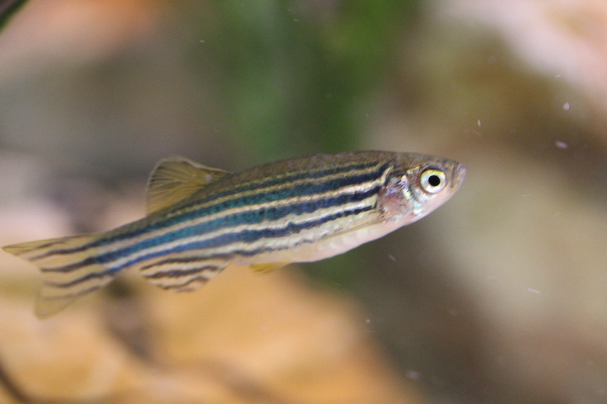

Zebra Danios are small aquarium fish that are easy to care for. They are best kept in a school of at least 5. They grow to be about 2 inches. They are playful and like to dart around the tank. They are very active fish.
"zebra danio (stripe)" by bob_jenkins is licensed under CC BY 2.0 https://search.creativecommons.org/photos/e9e51feb-0e37-4c3b-bb41-0ede1aa243c7